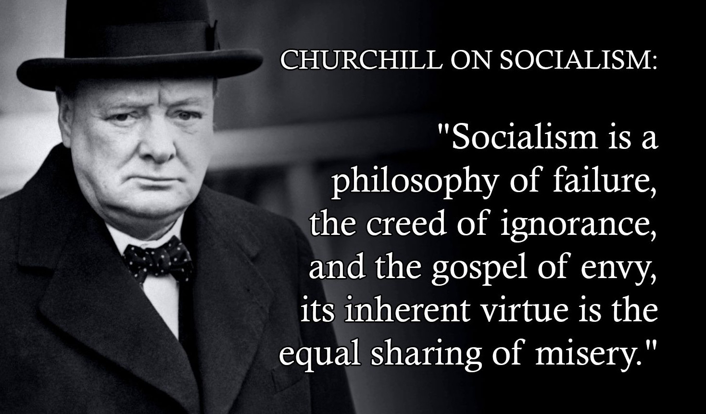

What is socialism?
Socialism, framed as the "collective ownership of the means of production," takes property and freedom away from individuals by force in the name of "the people."
This can be done in entirety, with brutal confiscations, or through a softer way: redistributive taxation, mass state employment, excessive regulations, price, wage, and rent controls. In either form, socialism consists of direct or indirect stealing, limiting people's freedom and making them dependent on the state.
There's an abundance of socialist measures, but they all share the same pattern: politicians promise larger groups that they will legalize stealing from smaller groups and share the loot as "free" services, handouts, or subsidies. In exchange, they ask for power.
The problem with this deal is not only that it's immoral, but that in the long run it hurts the overall economy and makes most people poorer and more oppressed—including those who at first appear to benefit.
Socialists promise free things. How they finance those things is simply with other people's earnings. They frame their policies as "equality," "solidarity," or "social justice" to legitimize their votes-for-stolen-money proposition.
Once understood, it's easy to see how their "solutions" pave the way to poverty and totalitarianism: power concentrates in the state, real opposition becomes impossible, and democracy is dismantled in practice.